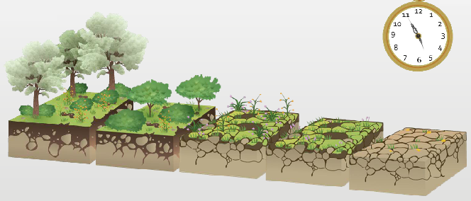

¿Cuáles son los elementos de los Ecosistemas?
Hay una estrecha vinculación entre los seres vivos, tanto que cuando falta uno se daña a todo el ecosistema, en un efecto conocido como efecto cascada. Sin embargo, no son sólo los organismos vivos los que conforman el ecosistema; la ecología, considera dentro de este importante sistema vivo, a dos elementos primordiales: los bióticos y los abióticos…
Factores abióticos y bióticos
En el ecosistema hay un flujo de materia y de energía que se debe a las interacciones organismos-medio ambiente. Sus componentes son:
Componentes abióticos o Abiota
Los factores abióticos son un conjunto complejo de interacciones que limitan el control de las actividades de los organismos, poblaciones y comunidades.
-
Las sustancias inorgánicas: CO2, H2O, nitrógeno, fosfatos, etc.
-
Los componentes orgánicos sintetizados en la fase biótica: proteínas, glúcidos, lípidos.
-
El clima, la temperatura y otros factores físicos.
Laabiotase compone por la energía, la materia (nutrientes y elementos químicos) y los factores físicos como la temperatura, la humedad, el rocío, la luz, el viento y el espacio disponible. El carbono, el oxigeno, el hidrogeno, el nitrógeno, el fósforo y el azufre constituyen a los macro-nutrientes, los cuales son los elementos esenciales con los que los organismos vivos construyen proteínas, grasas y carbohidratos o azucares.
Estos seis elementos conforman los complejos orgánicos encontrados en todos los seres vivientes. Junto a estos se encuentran los micronutrientes, los cuales son sustancias traza necesarias, como el cobre, el zinc, el selenio y el litio, y son regulados por ciclos junto con los macro-nutrientes para que estén disponibles en el medio físico.
Componentes bióticos o Biota
Los factores bióticos de un ecosistemas están conformados por los seres vivos: plantas, animales,hongos...
La biota está compuesta por los organismos vivos de un ecosistema, los cuales se dividen en dos categorías generales: los autótrofos y los heterótrofos. Esta distinción se basa en sus necesidades nutricionales y el tipo de alimentación.
Los distintos organismos de un ecosistema obtienen la materia y energía del medio de manera muy variada. Aquellos que lo hacen de una misma forma se agrupan en un conjunto o nivel trófico.
Funcionamiento del ecosistema
El funcionamiento de todos los ecosistemas es parecido. Todos necesitan una fuente de energía que, fluyendo a través de los distintos componentes del ecosistema, mantiene la vida y moviliza el agua, los minerales y otros componentes físicos del ecosistema. La fuente primera y principal de energía es el sol.
En todos los ecosistemas existe, además, un movimiento continúo de los materiales. Los diferentes elementos químicos pasan del suelo, el agua o el aire a los organismos y de unos seres vivos a otros, hasta que vuelven, cerrándose el ciclo, al suelo o al agua o al aire.
En el ecosistema la materia se recicla -en un ciclo cerrado- y la energía pasa – fluye- generando organización en el sistema.
La sucesión ecológica
La sucesión ecológica es el reemplazo de algunos elementos del ecosistema por otros en el transcurso del tiempo. Así, una determinada área es colonizada por especies vegetales cada vez más complejas. Si el medio lo permite, la aparición de musgos y líquenes es sucedida por pastos, luego por arbustos y finalmente por árboles. El estado de equilibrio alcanzado una vez que se ha completado la evolución, se denomina clímax. En él, las modificaciones se dan entre los integrantes de una misma especie: por ejemplo, los árboles nuevos reemplazan a los viejos.
Hay dos tipos de sucesiones: primaria y secundaria.
-
Sucesión Primaria: es aquella que se desarrolla en una zona carente de comunidad preexistente, es decir, que se inicia en un biotopo virgen, que no ha sido ocupado previamente por otras comunidades, como ocurre en las dunas, nuevas islas, etc. Este tipo de proceso puede durar miles de años.
-
Sucesión Secundaria: es aquella que se establece sobre una ya existente que ha sido eliminada por algún disturbio como incendio, inundación, enfermedad, talas de bosques, cultivo, etc. En este caso el ambiente contiene nutrientes y residuos orgánicos que facilitan el crecimiento de los vegetales.

Flujo de energía
El ecosistema se mantiene en funcionamiento gracias al flujo de energía que va pasando de un nivel al siguiente. La energía fluye a través de la cadena alimentaria sólo en una dirección: va siempre desde el sol, a través de los productores a los descomponedores. La energía entra en el ecosistema en forma de energía luminosa y sale en forma de energía calorífica que ya no puede reutilizarse para mantener otro ecosistema en funcionamiento. Por esto no es posible un ciclo de la energía similar al de los elementos químico.
El flujo de energía es aprovechado por los productores primarios u organismos fotosintéticos (plantas y otros) para la síntesis de compuestos orgánicos que, a su vez, utilizaran los consumidores primarios o herbívoros, de los cuales se alimentaran los consumidores secundarios o carnívoros. De los cadáveres de todos los grupos, los descomponedores podrán obtener la energía para lograr subsistir. De toda esta forma se obtendrá un flujo de energía unidireccional en el cual la energía pasa de un nivel a otro en un solo sentido y siempre con una perdida en forma de calor.
Pirámides Ecológicas y Niveles tróficos
Las pirámides ecológicas representan gráficamente la estructura trófica de un ecosistema, mediante rectángulos horizontales superpuestos que nos informan de las transferencias de la energía de una comunidad hasta llegar al último nivel trófico.
En el funcionamiento de los ecosistemas no ocurre desperdicio alguno: todos los organismos, muertos o vivos, son fuente potencial de alimento para otros seres. Un insecto se alimenta de una hoja; un ave come el insecto y es a la vez devorada por un ave rapaz. Al morir estos organismos son consumidos por los descomponedores que los transformarán en sustancias inorgánicas.
Estas relaciones entre los distintos individuos de un ecosistema constituyen la cadena alimentarla.
-
Los productores u organismos autótrofos: capaces de sintetizar materiales orgánicos complejos a partir de sustancias inorgánicas simples es decir, organismos capaces de producir su propio alimento. Auto, “a si mismo”; trophos, “nutrición”.
-
Los fotótrofos los constituyen la mayoría de las plantas verdes y algas que emplean la energía solar para convertir elementos químicos relativamente simples, como el dióxido de carbono, el agua y nutrientes, en compuestos complejos (carbohidratos, lípidos y proteínas).
-
Los quimiótrofos convierten los compuestos inorgánicos en energía, por ejemplo, las bacterias que viven en el fondo del mar alrededor de ventilas termales, las cuales utilizan la energía del hidróxido de sulfato para su nutrición.
Por medio de este proceso, las sustancias minerales se destransforman en compuestos orgánicos, aprovechables por todas las formas vivas.
-
Los heterótrofos o consumidores son aquellos que comen partes de células, tejidos o materiales de desecho orgánico de otros organismos para su subsistencia. Obtienen la energía química necesaria en forma directa o indirecta de los autótrofos, y por tanto, de manera indirecta del sol.
-
Los macro-consumidores o fagótrofos: heterótrofos, sobre todo animales, que ingieren otros organismos o fragmentos de materia orgánica. Ingieren partes y cuerpos enteros, vivos o muertos, de otros, de otros organismos; aquí se incluyen los herbívoros o consumidores primarios, los carnívoros o consumidores secundarios, y los omnívoros o consumidores terciarios.
-
-Los micro-consumidores o sapótrofos: también heterótrofos, llamados descomponedores sobre todo hongos y bacterias, que absorben productos en descomposición de organismos muertos y liberan nutrientes inorgánicos que pueden utilizar nuevamente los productores. Incluye a los detritívoros o consumidores de detritus (materia orgánica en proceso de descomposición, partes de tejidos y desechos).
Referencias:
https://bibliotecadeinvestigaciones.wordpress.com/ecologia/los-ecosistemas-componentes-funcionamiento-niveles-troficos-y-cadenas-alimentarias/